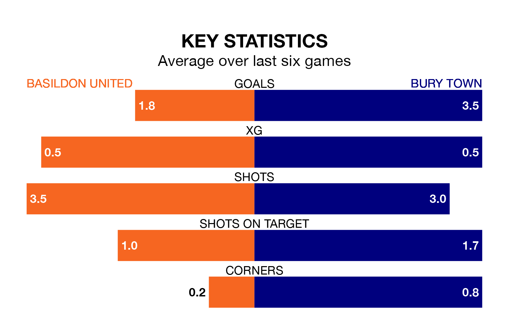

Saturday's match between Basildon United and Bury Town promises to be one for the neutrals, as two of the Isthmian League Division One North's most free-scoring sides go head-to-head.
Ahead of the game, Basildon and Bury sit joint-fourth and second in the goal-scoring charts, with 45 and 59 goals respectively.
Basildon are in reasonable form in the Isthmian League Division One North, with four wins and two losses from their last six games.
With five wins and a draw over that period, Bury's form is better – they have taken 16 points from 18, compared to United's 12.
In the last 10 years, Basildon and Bury have played each other on six occasions. They won three each.
On average, Basildon scored 1.8 goals and Bury 1.3 in those matches.
Their last meeting was on November 14, when Basildon won 6-2 away.
Town are fifth in the table after 23 games, of which they have won 13 and drawn five, earning 44 points.
The home team are two places behind the visitors in seventh, with 12 wins and three draws putting them on 39 points.
Basildon's last match was on February 3, a 4-0 win against Witham Town.
Bury beat Brightlingsea Regent 4-1 last time out, also on February 3.
Updated: 10:08 (UTC), 23/02/24